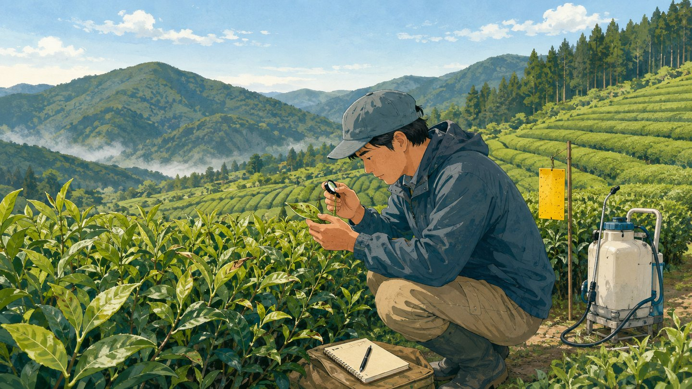
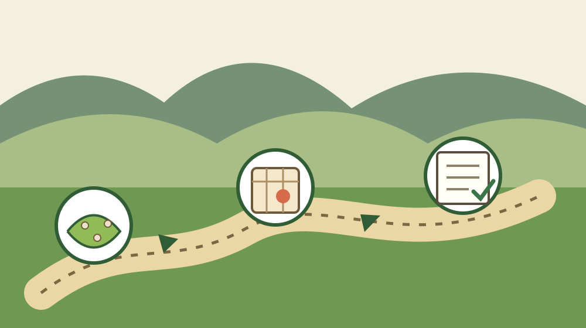

森町の茶園病害虫｜9月予報で確認する3点

この記事の要点
Q. 森町の茶園で、9月は何を先に確認すればいいですか。
A. 静岡県の9月予報では、クワシロカイガラムシの発生量が「多」、発生時期が「やや早い」とされました。森町の個別値ではありません。自園の寄生、9月4日前後のふ化状況、7月の防除記録の順で確認します。
親から茶園を引き継いだものの、病害虫の確認をどこから始めるか。9月は、その迷いが出やすい時期です。
茶園を手入れしてきた方は、すでに相当な時間を払っています。草、枝、肥料、防除、機械の維持は、一つずつ人の手を取ります。
家族が途中から引き継ぐ場合、その手間に情報不足が重なります。前年に何を使ったか。どの列で出たか。誰に相談したか。記録がなければ毎回振り出しです。
2026年8月26日、静岡県病害虫防除所は「病害虫発生予察情報（9月予報）」を公表しました。茶では複数の病害虫が挙げられています。
この記事は、クワシロカイガラムシに絞ります。県の巡回調査で、平均寄生株率18.0％が確認されたためです。
18.0％は森町の値ではありません。静岡県平均の巡回調査値です。この区別を崩すと、茶園ごとの判断を誤ります。
森町の茶園で9月予報をどう読むか
静岡県の9月予報は、森町の茶園を一律に判定する資料ではありません。県内の傾向を知り、自分の茶園を見る順番を決める資料です。
資料の予報概況では、クワシロカイガラムシの発生量を「多」としています。発生時期は「やや早い」です。
予報欄の括弧内には、寄生株率1.3％とあります。この1.3％は、9月の県平均平年値です。2026年9月の予測寄生率ではありません。
詳細欄では、8月上中旬の巡回調査結果が示されています。平均寄生株率は18.0％で、平年は4.4％でした。
資料は、気温が平年より高いとしています。降水量は平年並みか少ない見込みです。これらの条件は、発生をやや助長すると整理されています。
9月の発生量は5段階の区分による「多」です。18.0％は8月上中旬の観測値、1.3％は9月の平年値です。
三つは同じ種類の数字ではありません。「多」「18.0％」「1.3％」を一つの比較に混ぜないことが、最初の確認です。
県平均18.0％を森町の数字にしない
県平均18.0％は、森町の全茶園で18％の株に寄生しているという意味ではありません。森町単独の寄生株率は、今回の資料から確認できません。
18.0％を100株に置き換えると18株に相当します。平年4.4％なら同じ換算で4.4株です。
18.0を4.4で割ると約4.1です。県の巡回調査値は、平年の約4.1倍に当たります。差は13.6ポイントです。
この差なら、「少し高い」で済ませず、自分の茶園を見直す理由になります。
意外なのは、予報概況の1.3％より18.0％の方が大きく見えることです。ただし、調査時期と数字の役割が違います。
18.0を1.3で割り、発生が約14倍になると読むのは不適切です。病害虫の数字も、分母と時点をそろえて読みます。
私は、県平均を軽く見るべきではないと考えます。一方で、県平均だけで個々の茶園を決めつけるのも違います。
数字は警報器です。診断書ではありません。18.0％を見たら、自分の茶園で有無を確かめる。そこまで進めて数字が実務になります。
確認1：株元と枝で寄生の有無を見る
9月の第一の確認は、茶園内でクワシロカイガラムシの寄生が認められるかを見ることです。県資料も、各地のふ化状況を観察するよう案内しています。
全面を一度に見ようとすると、作業が重くなります。引き継いだ家族ほど、どこを見たか分からなくなります。
最初は一列で構いません。入口側、中央、山側など、見た場所を区別します。確認した列を記録に残します。
寄生の有無だけでなく、見つけた位置を残します。「茶園にいた」だけでは、次の確認場所を絞れません。
写真は、枝を大きく写した画像と、列の位置が分かる画像を分けます。家族が後から見ても場所を戻せます。
見つからなかった記録にも意味があります。9月3日に入口側の一列を確認し、見つからなかった。これなら次回と比較できます。
見つからないことは、茶園全体にいない証明ではありません。確認範囲を限定して残す方が、正直で役に立ちます。
確認2：9月4日を目安にふ化状況を見る
第二の確認は、2026年9月4日前後のふ化状況です。県資料は、菊川市の茶業研究センターにおける予想ふ化最盛日を9月4日としています。
この予想日は2026年8月19日の計算に基づき、平年より6日早い見込みです。
9月4日は、森町のすべての茶園で同じ日に最盛となる保証ではありません。資料も、各地の茶園内を観察するよう求めています。
日付は、作業日を機械的に決める印ではありません。見に行く日を忘れないための目安として使います。
9月3日に記事を読んだなら、9月4日前後に一列を見る予定を入れます。行けない場合は、家族や管理を頼む相手と日を決めます。
その際、「茶園を見ておいて」では情報が戻りません。場所、確認対象、写真の撮り方を短く伝えます。
たとえば「入口側の一列で、枝の状態が分かる写真を3枚」と決めます。依頼が具体なら、遠方の家族も結果を共有できます。
予想ふ化最盛日が平年より6日早い点は、前年の日付だけを頼れないことを示します。前年と同じ週末では遅れる可能性があります。
確認3：7月の防除記録を先に開く
第三の確認は、2026年7月に何を使ったかです。県資料は、7月に防除した茶園では系統の異なる薬剤を使うよう案内しています。
家族が引き継いだ茶園では、薬剤名より先に記録の所在を探します。作業日誌、購入伝票、容器の写真、依頼先への連絡履歴が手掛かりです。
記録が見つからない場合は、「使っていない」と決めません。分からないことを、分からないまま記録します。
薬剤の選択は、この記事だけでは決められません。茶園の状況、使用時期、収穫までの日数を確認する必要があります。
県資料も、薬剤選択では収穫前日数に注意するよう示しています。使用時は最新の登録内容と製品表示を確かめます。
2026年6月26日には、クワシロカイガラムシの注意報第2号も出ています。9月予報は、その発生を受けた続報でもあります。
7月の作業を覚えている人がいるなら、記憶だけで終わらせません。日付、薬剤名、対象範囲を共有メモに移します。
防除を外部へ頼んだ場合は、依頼先名と連絡先も残します。翌年に別の家族が引き継いでも、確認先が消えません。

森町の茶園と家族の負担
森町で茶を続ける負担は、病害虫の確認だけではありません。担い手、移動、機械の維持費、後継の不在が同じ茶園に重なります。
茶園から離れて暮らす家族なら、確認のための移動も必要です。平日の昼に動けない家族もいます。
町内に住む人へ頼む場合、その人の時間も使います。昔から見てくれた人の善意を、無限の労力として扱ってはいけません。
茶園を守ってきた世代は、病害虫の名前だけでなく、列ごとの差も覚えているかもしれません。その知識は、記録しなければ引き継げません。
親が元気なうちに聞くのは、「続けるか、やめるか」だけではありません。どの列を先に見るか、誰へ聞くかも引き継ぎ情報です。
茶園を引き継いだら摘採より先に続ける条件を数える記事では、作業、機械、委託先、家族の役割を整理しています。
病害虫への対応も、その条件の一部です。防除だけを切り離さず、誰が見に行けるかまで決めます。
荒茶価格と森町の茶を続ける条件を扱った記事も、数字を家族の判断へ翻訳する材料になります。
価格が上がることと、家族が管理を続けられることは別です。収入の数字と作業時間を同じ表に置いて考えます。
森町の茶の歴史をたどった記事を読むと、茶園が地域の積み重ねで残ってきたことも分かります。
積み重ねへの敬意は、負担を見えなくする理由にはなりません。続けるなら、確認を誰か一人の記憶に依存させない段取りが要ります。
良い点：数字と時期が同時に示された
静岡県の9月予報の良い点は、発生量だけでなく、観測値と時期の目安が同じ資料にあることです。
「発生量：多」だけでは、何を急ぐかが分かりません。平均寄生株率18.0％と平年4.4％があるため、差をつかめます。
予想ふ化最盛日が2026年9月4日と示された点も使えます。平年より6日早いという差まで確認できます。
気温と降水量の見通しも、発生をやや助長する根拠として整理されています。予報区分だけを見せる資料ではありません。
2026年6月26日の注意報へ案内している点も良いところです。9月予報だけで判断を閉じず、前段の発生状況へ戻れます。
県の数字を出して終わりにせず、各地の茶園内を観察するよう明記しています。現地確認を省けないことが伝わります。
注文したい点：森町単独の値は分からない
今回の資料だけでは、森町単独の寄生株率は分かりません。地区別、標高別、管理状況別の差も確認できません。
ここは曖昧にせず、記事側で線を引く必要があります。18.0％を「森町の寄生株率」と見せる書き方はできません。
森町の茶園を持つ家族が知りたいのは、県平均の次です。自分の茶園ではどの列に出たか。前年と何が違うか。相談先は誰か。
一事業者としては、地域ごとの確認記録を家族が残しやすい形があると助かります。細かな公開値を増やせという話ではありません。
現場では、日付と場所と写真が一つにまとまるだけでも違います。家族間の伝言が、翌年に使える記録へ変わります。
私は、県平均の数字を大きく掲げることに少し迷いがあります。数字が強いほど、森町個別値と誤解されやすいからです。
それでも18.0％を伏せるべきではありません。平年4.4％との差は、現地を確認する理由として明確です。
必要なのは数字を弱めることではありません。数字の範囲を正確に書き、茶園ごとの観察につなげることです。
対案・結論：今日一列だけ確認する
2026年9月3日にできる小さな一歩は、茶園の一列だけを決めて確認することです。全面を終える必要はありません。
見る列を決め、寄生の有無を確かめ、写真を残します。確認日と位置を一緒に記録します。
現地へ行けない家族は、9月4日前後に確認できる人を一人決めます。依頼内容を一列と写真3枚まで具体化します。
確認後は2026年7月の防除記録を開きます。薬剤名、日付、対象範囲が分からなければ、「不明」と残します。
不明を空欄にしないことが大切です。空欄は、未実施なのか記録漏れなのか、翌年には判別できません。
発生が認められた場合は、県の最新情報と使用する製品の表示を確認します。個別の選択は専門の窓口や販売店へ相談します。
今日の成果は、茶園全体の結論ではありません。「入口側一列を9月3日に確認した」という事実が一つ増えることです。
家族に残す記録
家族に残す記録は、茶園名だけでは足りません。所在地、入口、確認した列、確認日、写真の保存先を一組にします。
茶園へ入る道も記録します。初めて行く家族が、同じ入口へ着ける情報にします。
2026年7月の防除記録には、作業者、薬剤名、日付、対象範囲を残します。分からない欄には「不明」と書きます。
相談先の氏名と電話番号も、本人の同意を得て家族内で共有します。誰が知っているかを探す時間を減らせます。
病害虫の記録と、茶園を続ける判断は別欄にします。発生を見つけた日に、売却や廃止まで急いで決める必要はありません。
土地の名義、地番、境界、進入路も別に整理します。茶園の管理と土地の権利関係を混ぜない方が、相談先を選びやすくなります。
大石の視点
大石浩之（磐田市／不動産業）として、私はこう考えます。18.0％は、怖がるためでなく、見に行く順番を決めるための数字です。
不動産の相談でも、町全体の数字だけで一軒の答えは出ません。道路、境界、名義、現地の状態を見て、個別の判断に近づきます。
茶園も同じです。県平均は入口です。森町の一つの茶園に答えを出すのは、現地の寄生状況と家族の記録です。
私は、18.0％を平年4.4％の約4.1倍と読み替えました。この換算なら、現地確認を後回しにしない理由が伝わります。
一方で、その約4.1倍を森町の茶園へ直接当てはめません。県平均と個別の茶園を分ける線は、最後まで守ります。
森町の茶を守ってきた方の努力は、数字一つでは測れません。だからこそ、担い手の時間を無駄にしない確認順序が必要です。
「全部見てください」では負担が広すぎます。「一列、9月4日前後、写真3枚」まで絞れば、家族も頼みやすくなります。
経験者一人の記憶に頼るやり方は続きません。後継が動ける大きさに作業を分け、記録へ移す必要があります。
まとめ
静岡県の2026年9月予報では、クワシロカイガラムシの発生量は「多」、発生時期は「やや早い」です。
8月上中旬の県平均寄生株率は18.0％で、平年4.4％の約4.1倍でした。森町単独の値ではありません。
菊川市の茶業研究センターにおける予想ふ化最盛日は、2026年9月4日です。平年より6日早い見込みです。
森町の茶園で確認する順番は明確です。株元と枝、9月4日前後のふ化状況、2026年7月の防除記録の順です。
今日できるのは、一列を決めることです。現地へ行けなければ、見る人と写真の枚数を決めます。
県平均を個別値に見せず、県の予報を現地確認へつなぐ。それが9月の数字を家族の段取りへ翻訳する使い方です。
よくある質問
静岡県の9月予報は、県平均と個別値の違い、確認時期、過去の作業記録に分けて読むと使いやすくなります。
Q1. 寄生株率18.0％は森町の数字ですか。
A1. いいえ。18.0％は、静岡県が2026年8月上中旬に行った巡回調査の県平均です。森町単独の寄生株率は資料にありません。森町の茶園では県平均を注意の目安にし、株元や枝を現地で確認します。
Q2. 9月4日に防除すればよいですか。
A2. 9月4日は、菊川市の茶業研究センターにおける第3世代の予想ふ化最盛日です。森町の全茶園に同じ日が当てはまるとは限りません。9月4日前後を観察日の目安にし、各茶園のふ化状況を確かめます。
Q3. 7月に使った薬剤が分からない場合はどうしますか。
A3. 作業日誌、購入伝票、容器の写真、依頼先への連絡履歴を確認します。分からない場合は未実施と決めず、不明と記録します。使用する製品は最新の表示を確かめ、個別の選択は専門の窓口や販売店へ相談します。
発生予報、登録内容、使用条件は変わる場合があります。実際の防除前に県の最新情報と製品表示を確認し、個別判断は専門の窓口や販売店へ相談してください。
参考にした公式情報
- 病害虫発生予察情報（9月予報）／静岡県病害虫防除所（2026年8月26日公表。発生量、寄生株率、予想ふ化最盛日、防除上の注意を2026年9月3日に確認）
- 『遠州森の茶業史』販売について／静岡県森町（森町が茶業史を本編634ページとダイジェスト版35ページで刊行していることを2026年9月3日に確認）
- 農業経営基盤強化促進法に基づく地域計画について／静岡県森町（茶園を含む農地の担い手と目標地図を考える町公式資料として2026年9月3日に確認）

磐田市で小さな不動産業を営みながら、森町の空き家・農地・実家じまいのご相談を受けています。地域と不動産実務をつなぐ目線で、確認の順番まで具体的に書きます。
最終確認日：2026-09-03 ／ 本記事は公表情報と執筆者の見解を分けています。18.0％は静岡県平均であり、森町単独の寄生株率ではありません。予想日や登録内容は変わり得るため、実際の作業前に最新資料と製品表示を確認してください。